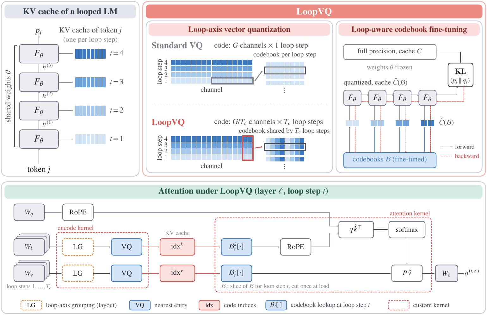
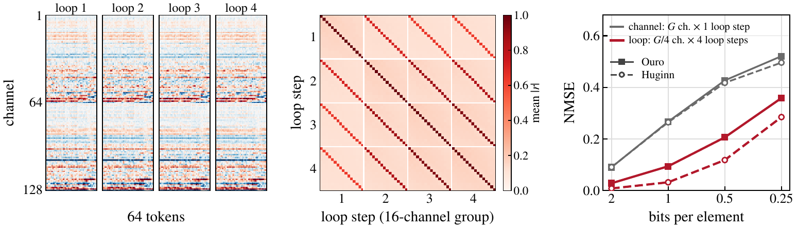
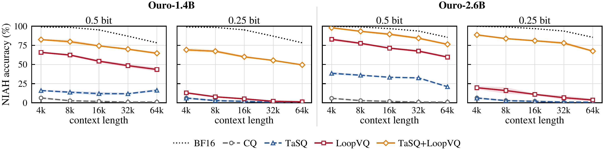
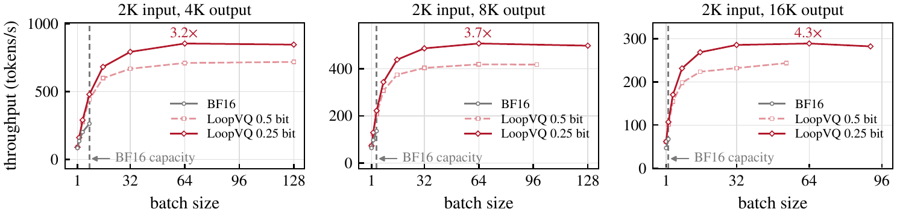
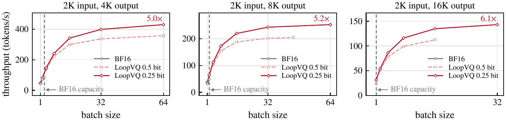
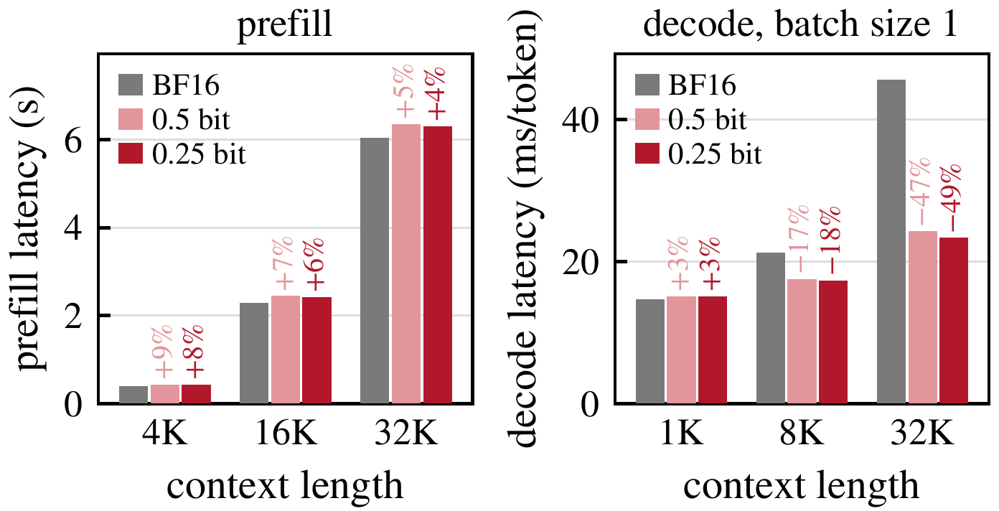
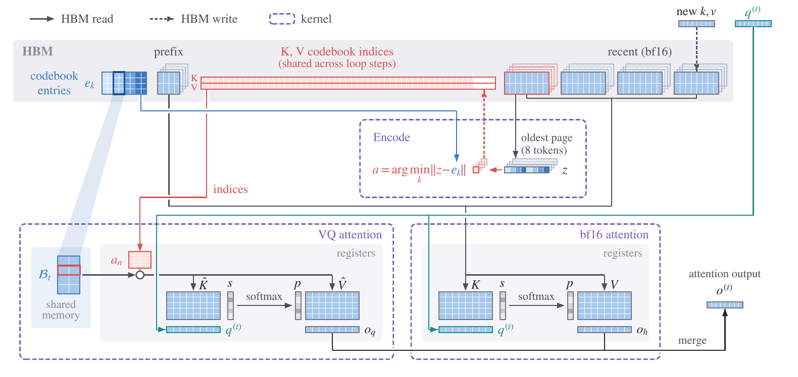

Looped LMs trade parameter memory for KV cache.
Left: every loop step stores its own keys and values, so Ouro needs far more KV cache per token than standard LLMs of similar size; LoopVQ compresses it by up to 64×.
Right: below 1 bit, vector quantization designed for standard LLMs collapses on Ouro-2.6B, while LoopVQ stays close to BF16 at 0.5 bits and TaSQ+LoopVQ does so even at 0.25 bits.
TL;DR — LoopVQ quantizes the KV cache of looped transformers to below one bit per element by sharing vector codes across loop steps and applying loop-aware fine-tuning. It nearly halves decode latency at long contexts and raises serving throughput by up to 6.1× over BF16.
Highlights
32–64×
KV cache compression at 0.5 and 0.25 bits per element
98.6%
of BF16 accuracy on general tasks for Ouro-2.6B at 0.5 bit (TaSQ+LoopVQ)
~2×
lower decode latency than BF16 at a 32K-token context
~6.1×
peak serving throughput over BF16 on Ouro-2.6B in SGLang
Method
The keys and values of a layer are strongly correlated across loop steps. Grouping channels of several loop steps into one sub-vector exploits this correlation, which makes the loop dimension an additional axis for vector quantization, complementary to the channel axis used by existing methods.

Overview of LoopVQ. LoopVQ codes G/Tc channels across Tc loop steps, so one index serves all of them at the same bitwidth as coding each loop step separately, and fine-tunes the codebooks against the full-precision output through the loop. At inference, each loop step reads the shared indices through its own slice of the codebook.
Component 1
Loop-axis vector quantization
One codebook index covers channels of several consecutive loop steps instead of more channels of a single step, so the shared structure along the loop axis lowers the reconstruction error at no extra cost in bits.
Component 2
Loop-aware codebook fine-tuning
The codebooks are fine-tuned so that the quantized model matches the output of the full-precision model while every loop step reads the quantized cache, accounting for the unequal sensitivity of the loop steps.

The KV cache of a looped LM is redundant along the loop axis. Left: the keys of one head of Ouro-1.4B look alike at every loop step. Middle: channels are strongly correlated across loop steps. Right: at the same bitwidth, a code spanning four loop steps reconstructs the cache with lower error than one spanning a single step.
Results
Long-context retrieval

RULER needle-in-a-haystack accuracy of Ouro-1.4B and Ouro-2.6B from 4K to 64K tokens at 0.5 and 0.25 bit, averaged over the eight NIAH tasks and three seeds. Every method keeps the first 64 and the most recent 256 tokens in bf16.
Efficiency
Measured end to end in SGLang on one RTX 6000 Ada GPU, against BF16 serving with SGLang's optimized kernels (A100 results in the paper).
End-to-end throughput
Up to 6.1× higher peak throughput vs. BF16
Concurrent requests that fit in GPU memory 2K-token prompt + output


Throughput with 2K-token prompts and 4K, 8K, and 16K generated tokens on one RTX 6000 Ada, up to the largest batch that fits in memory.
The BF16 cache holds only a few long requests, while LoopVQ serves tens to over a hundred and is also faster at the same batch size; the gain grows as the output gets longer.

Latency on Ouro-1.4B at batch size 1.
−49%
decode latency at a 32K-token context (0.25 bit; −47% at 0.5 bit)
16×
fewer bytes read per token and loop step than the bf16 keys and values (8× at 0.5 bit)
+4–9%
prefill overhead from encoding, shrinking with the context length
Serving in SGLang
We implement LoopVQ in SGLang with fused encode and attention kernels. The quantized cache stores one index row for several loop steps, and each loop step reads it through its own slice of the codebook.
Write in bf16
The key and value of each new token are written in bf16. The first nsink and the most recent nrecent tokens stay in bf16 at every loop step.
Encode in pages
After every 8 generated tokens, the oldest recent page is encoded into codebook indices shared across loop steps.
Attend from indices
At loop step t, the kernel loads the codebook slice Bt into shared memory once and looks up keys and values from the indices in registers, then merges its output with the bf16 attention.

Serving LoopVQ in SGLang. Sink and recent tokens stay in bf16 at every loop step; all other tokens are stored as codebook indices shared across loop steps.
BibTeX
@article{cheong2026loopvq,
title = {LoopVQ: Sub 1-bit KV Cache Quantization for Looped Transformers},
author = {Cheong, Minsoo and Yoo, Sungjoo},
journal = {arXiv preprint arXiv:2611.05304},
year = {2026}
}